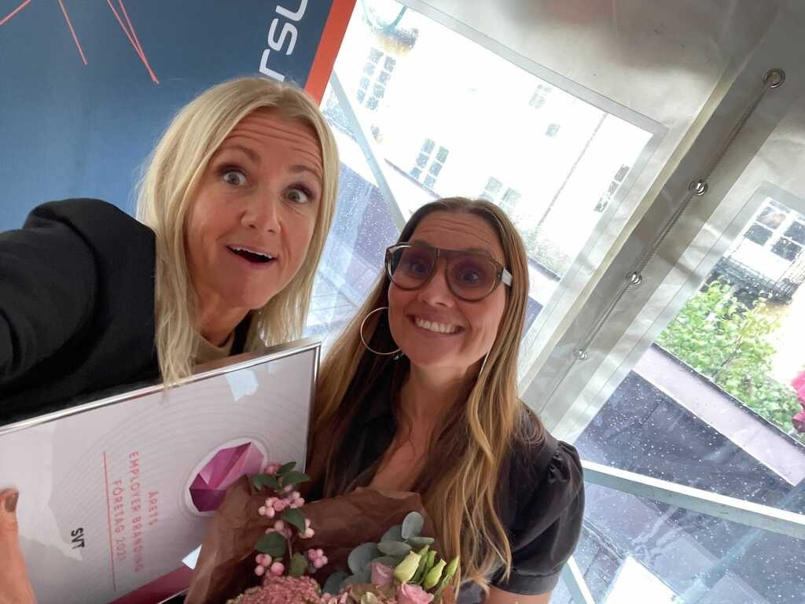

Våra handledare
Jenny Wester och Kristina Halling
Under hela vår praktik har vi haft lyxen att ha världens bästa handledare. Vi minns fortfarande första dagen när vi satt där i entrén, nervösa som bara den😅, och redan då kände vi oss välkomna!! De har alltid ställt upp och oj vad ni har fixat för oss.
In i minsta detalj har ni planerat och styrt upp hela praktiken. Ni har sett till att vi alltid haft team att följa, meningsfulla uppgifter och stöd när vi behövt det. Även om det blev lite kraschar i planeringen fixade ni det på en gång. Ni har svarat på våra frågor, stora som små, och fått oss att känna att vi bidrar till det arbete som görs här på SVTi och att våra åsikter faktiskt har betydelse.
Utöver det har ni dessutom fixat med oss på så många roliga “extra” saker. Tack vare dem har vi fått se Melodifestivalen backstage, vara med på inspelningen av både Lilla aktuellt och Morgonstudion, hängt med fantastiska meteorologer, träffat KTH-studenter och massa annat!
Men det har inte bara handlat om jobb, ni har också bjudit oss på många härliga pauser, skratt och luncher tillsammans.😄
Och alla de här sakerna har skapat otroligt fina minnen och lärdomar för livet. Därför vill vi avsluta med ett STORT TACK till Jenny och Kristina! Utan er hade den här praktiken inte blivit vad den blev – värdefull, rolig och oförglömlig.😍